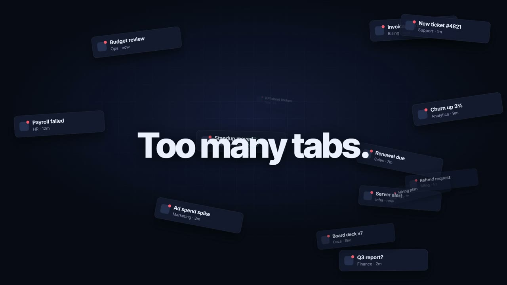
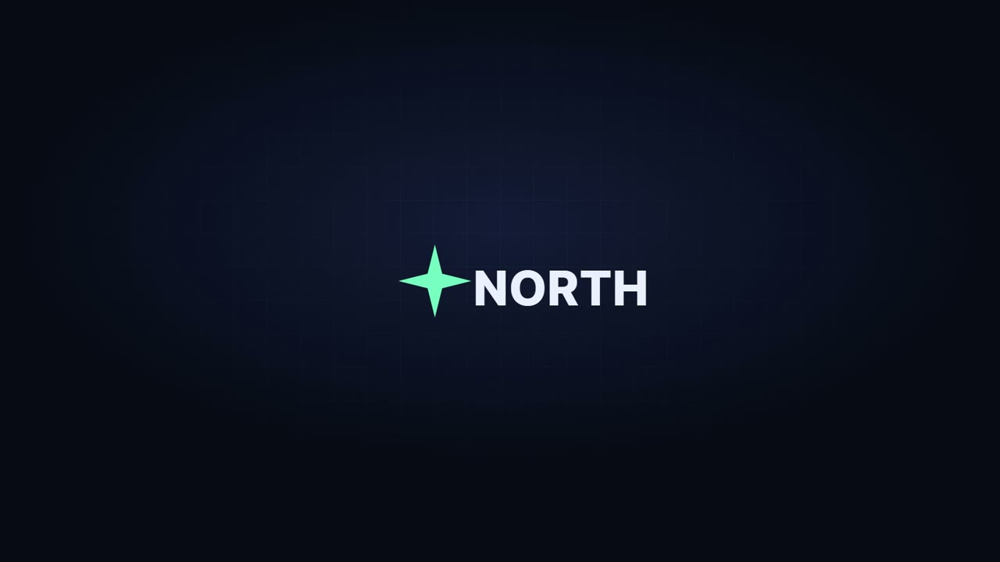
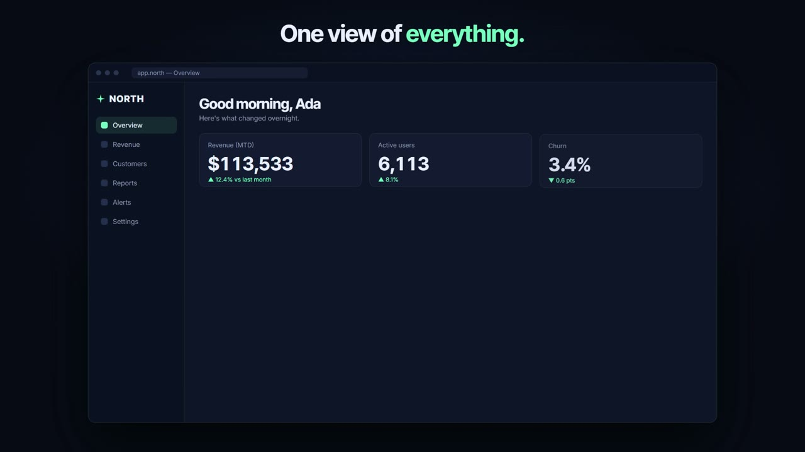
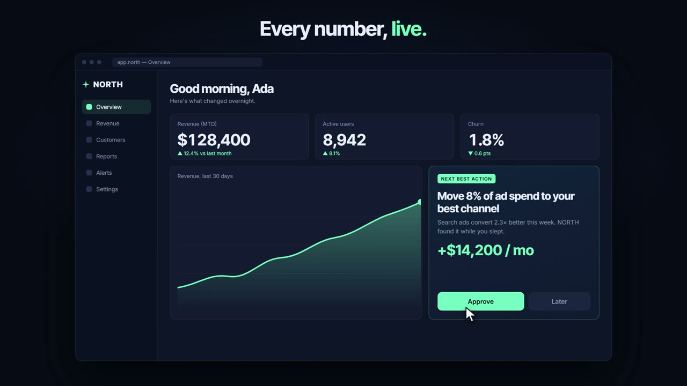
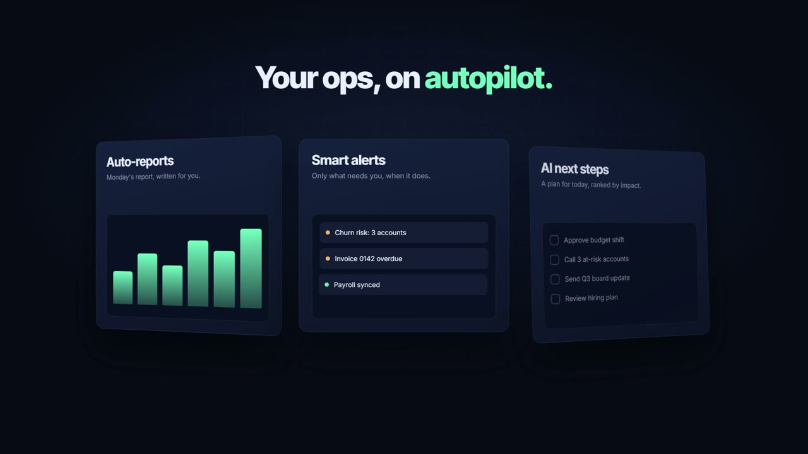
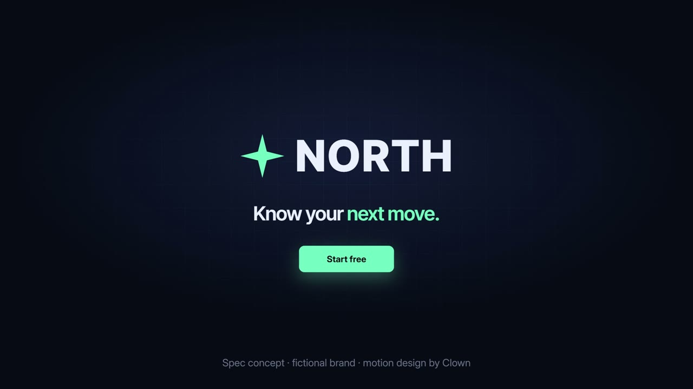

← All work
SaaS launch film
NORTH
“Know your next move.” A launch film for an invented ops dashboard: a swarm of notifications collapses into the logo, the product builds itself on screen, and one click approves the next best action.
Format16s · 16:9
RoleConcept, UI design, animation, sound
BriefSelf-initiated
Year2026
The brief
SaaS launch videos usually show a dashboard floating in space. Show the problem first, then make the product feel like the answer in one smooth move. Deep navy, one mint accent, real-looking UI.
My role
Concept, UI design, animation, sound.
Tools
Made in code: HTML and GSAP, frame-by-frame render · Every UI element designed and animated, not screen-recorded · Sound design with a hit on every interaction
Self-initiated brief: NORTH is a fictional project made for this portfolio.
Process
Styleframes





